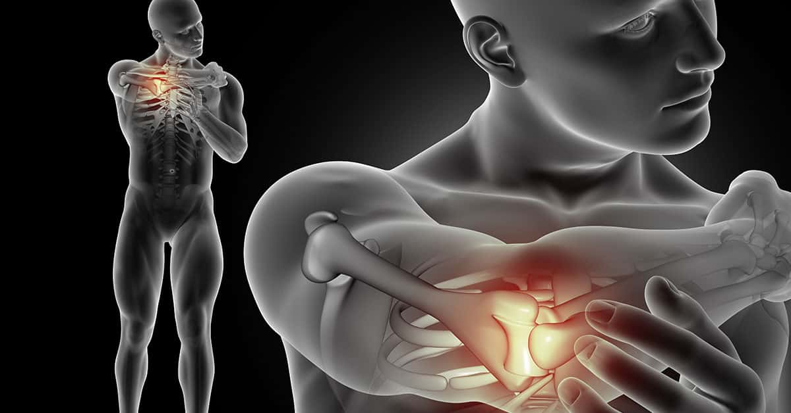
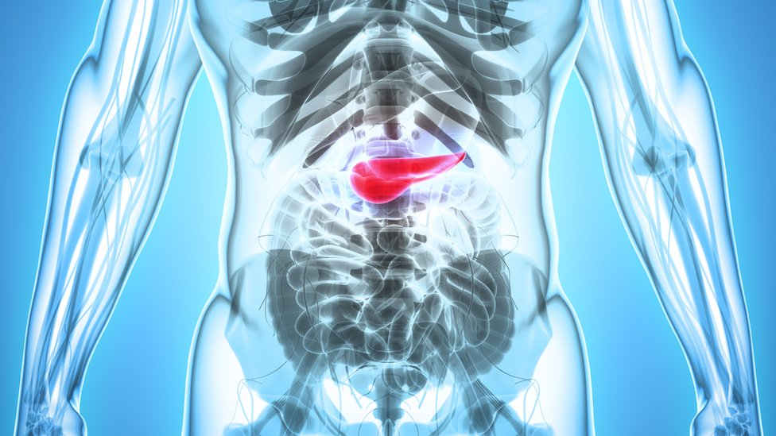

A data, celebrada anualmente, tem o objetivo de compartilhar informações e promover a conscientização sobre a doença; proporcionar maior acesso aos serviços de diagnóstico e de tratamento e contribuir para a redução da mortalidade. Desde 2020, com a pandemia COVID-19, os grupos que atuam em câncer de mama tiveram que repensar suas campanhas do Outubro Rosa e aumentar sua presença virtual. Por meio de intervenções, campanhas e mensagens inovadoras, eles mostraram que a promoção da saúde pública pode assumir várias formas e gerar um forte impacto no acesso à saúde. Qual a melhor forma de adaptar uma campanha? Por que a parceria com outros grupos pode aumentar o alcance das mensagens compartilhadas? Como avaliar o impacto de uma campanha virtual? O evento “Repensando o Outubro Rosa: como aumentar o engajamento com o público virtualmente, pode ser acessado aqui.No Brasil, em 2018, a Lei nº 13.733 instituiu o Mês de conscientização sobre o câncer de mama – outubro rosa, período em que devem ser desenvolvidas as seguintes atividades, entre outras: I – iluminação de prédios públicos com luzes de cor rosa;II – promoção de palestras, eventos e atividades educativas;III – veiculação de campanhas de mídia e disponibilização à população de informações em banners , em folders e em outros materiais ilustrativos e exemplificativos sobre a prevenção ao câncer, que contemplem a generalidade do tema. O câncer de mama é o tipo que mais acomete mulheres em todo o mundo, tanto em países em desenvolvimento quanto em países desenvolvidos. Cerca de 2,3 milhões de casos novos foram estimados para o ano de 2020 em todo o mundo, o que representa cerca de 24,5% de todos os tipos de neoplasias diagnosticadas nas mulheres. As taxas de incidência variam entre as diferentes regiões do planeta, com as maiores taxas nos países desenvolvidos. Para o Brasil, a estimativa foi de 66.280 casos novos de câncer de mama em 2021, com um risco estimado de 61,61 casos a cada 100 mil mulheres. Esse tipo de câncer também ocupa a primeira posição em mortalidade por câncer entre as mulheres no Brasil, com taxa de mortalidade ajustada por idade, pela população mundial, para 2019, de 14,23/100 mil. As maiores taxas de incidência e de mortalidade estão nas regiões Sul e Sudeste do Brasil. Os principais sinais e sintomas suspeitos de câncer de mama são: caroço (nódulo), geralmente endurecido, fixo e indolor; pele da mama avermelhada ou parecida com casca de laranja; alterações no bico do peito (mamilo) e saída espontânea de líquido de um dos mamilos. Também podem aparecer pequenos nódulos no pescoço ou na região das axilas.
Visão: "Melhorar a autoestima das pessoas, mantendo sempre a qualidade no atendimento e serviços prestados num ambiente sempre limpo e organizado."
A gente se especializou em ajudar os nossos clientes a criarem e manterem seus próprios estilos, dos mais conservadores aos mais modernos. Satisfação e a confiança dos nossos clientes são nossas prioridades.
Sintomas
- Dor nos ossos (ex.: costas, quadris, costelas, braços e pernas) que dura mais de uma a duas semanas e costuma piorar à noite;
- Fraqueza ou dormência nas pernas e perda de controle urinário e/ou intestinal;
- Perda de peso inexplicável e perda de apetite;
- Náusea constante;  
SINAIS!
Os sinais e sintomas do câncer podem variar, e algumas mulheres que têm câncer podem não apresentar nenhum desses sinais e sintomas.
De qualquer maneira, é recomendável que a mulher conheça suas mamas, e saiba reconhecer alterações para poder alertar o médico. A melhor época do mês para que a mulher que ainda menstrua avalie as próprias mamas para procurar alterações é alguns dias após a menstruação, quando as mamas estão menos inchadas. Para as mulheres que já passaram a menopausa, o autoexame pode ser feito em qualquer época do mês.De qualquer maneira, é recomendável que a mulher conheça suas mamas, e saiba reconhecer alterações para poder alertar o médico. A melhor época do mês para que a mulher que ainda menstrua avalie as próprias mamas para procurar alterações é alguns dias após a menstruação, quando as mamas estão menos inchadas. Para as mulheres que já passaram a menopausa, o autoexame pode ser feito em qualquer época do mês.
Qualquer alteração que você venha a observar deve ser comunicada imediatamente ao seu médico, mesmo que elas tenham aparecido pouco tempo depois da última mamografia que você realizou ou do exame clínico das mamas feito por um médico. O sintoma mais comum do câncer de mama é o aparecimento de um nódulo ou massa. Um nódulo sólido, indolor e com bordas irregulares é muito provável que seja um tumor maligno, mas os cânceres de mama podem ser sensíveis ao toque, macios ou redondos. Eles podem até ser dolorosos. Por esse motivo, é importante que qualquer nova massa, nódulo ou alteração na mama seja examinada por um médico.
ESTAGIO I e II


É comumente recomendada a cirurgia conservadora (retirada apenas do tumor), mastectomia (retirada da mama) parcial ou total (pode haver reconstrução mamária), e radioterapia para algumas situações.
ESTAGIO III

Esse estágio indica o desenvolvimento de um câncer de mama localmente avançado que: pode ser um tumor de mama grande (normalmente maior que 5 centímetros); pode ter se espalhado para vários linfonodos axilares ou de outras áreas próximas à mama; pode ter se espalhado para outros tecidos ao redor da mama, como pele, músculos ou costelas.
Prevenção
>Prevenção de metástase;A detecção precoce do câncer primário é a forma mais eficaz de prevenir a formação de um ametástase. Quando o câncer é removido em seus estágios iniciais, o risco de que ele libere células-filhas na circulação, com capacidade de se espalhar para outros locais do corpo, é muito menor.

>A princípio, o tratamento do câncer de mama depende muito do tipo do tumor e do estágio em que a doença se encontra (estadiamento). Quando a doença é descoberta em fases iniciais existem maiores chances de cura. Quando a doença já está em metástase, isto é, quando já se espalhou para outros órgãos, o tratamento visa prolongar a sobrevida e melhorar a qualidade de vida do paciente.
•Pratique exercícios físicos regularmente;
•Consuma alimentos saudáveis;
•Mantenha um peso corporal adequado;
•Evite o consumo de bebidas alcoólicas.